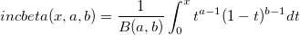

IncBeta
IncBeta-func
Description
This function is used to calculate the incomplete Beta function with parameters x, a, and b, which is denoted by: 
where B(a,b) is the Beta function.
Syntax
double incbeta(double x, double a, double b)
Parameters
x
- Input parameter. The value of the x variate, must lie on the interval [0, 1].
a
- Input parameter. The first shape parameter, a, of the required beta distribution, must be positive( a>0 ).
b
- Input parameter. The second shape parameter, b, of the required beta distribution, must be positive ( b>0 ).
Return
Returns the value of Beta function with parameters x, a and b.
Example
aa = incbeta(1,2,2);
aa = ; //should return 1
See Also
beta(a, b), betacdf(x, a, b)